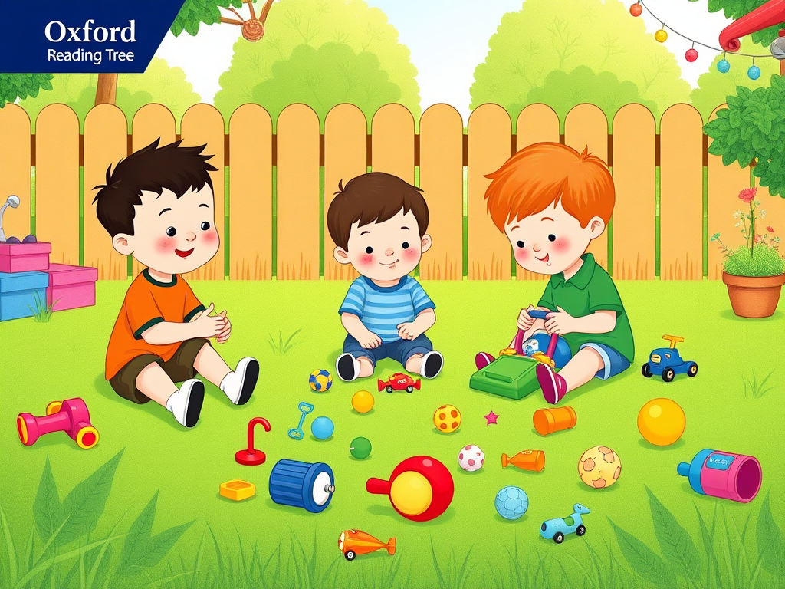
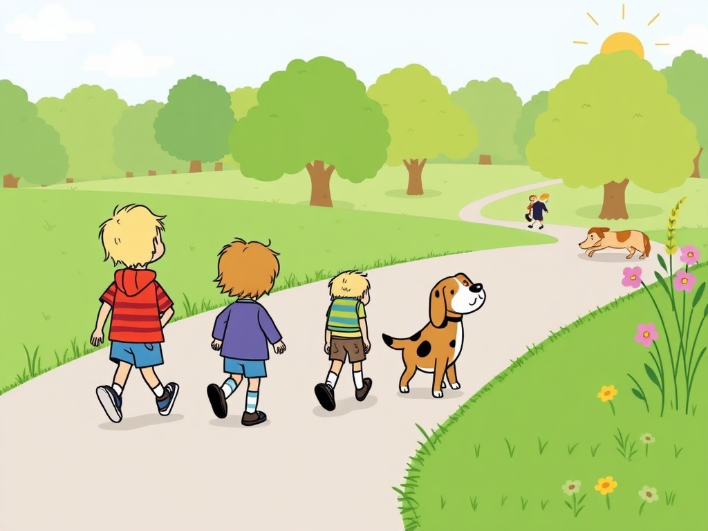
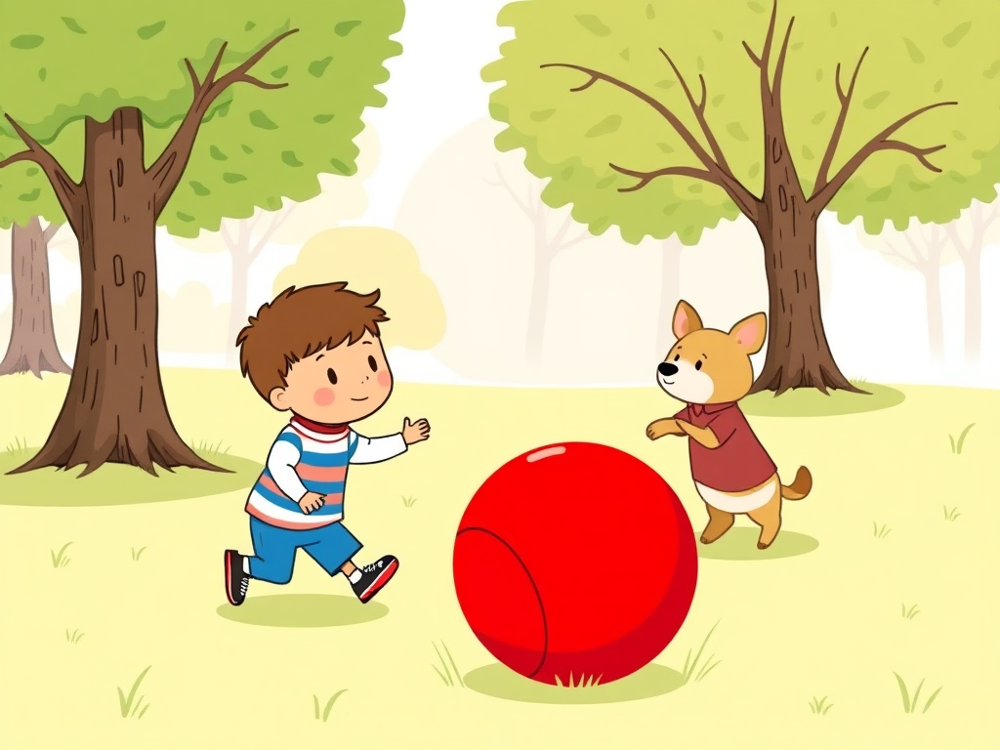
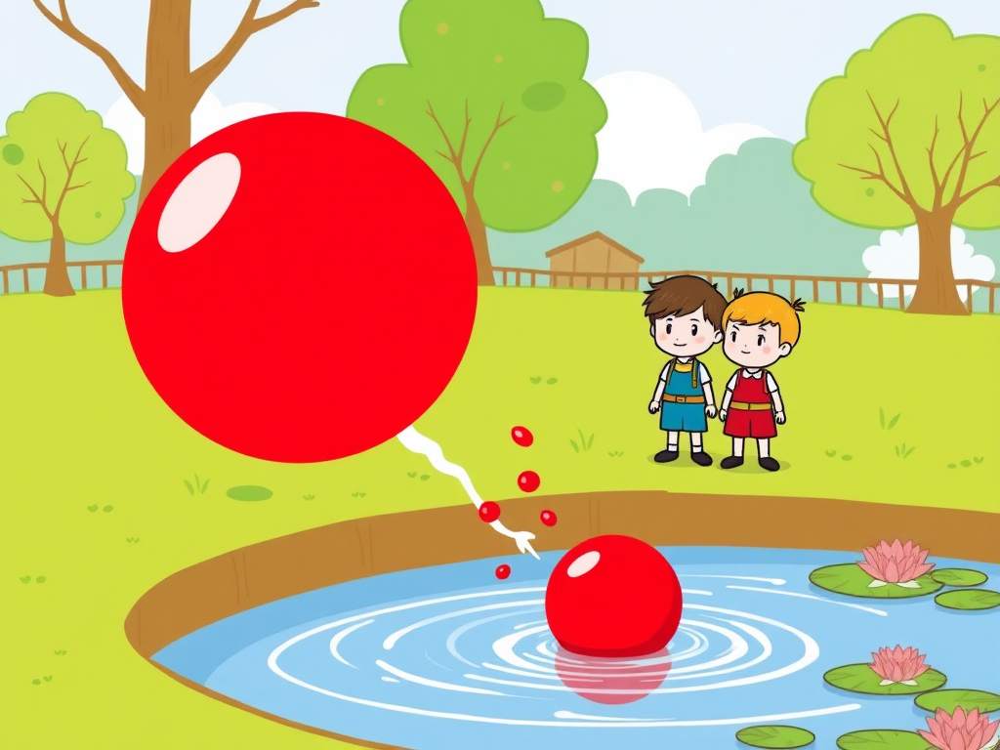
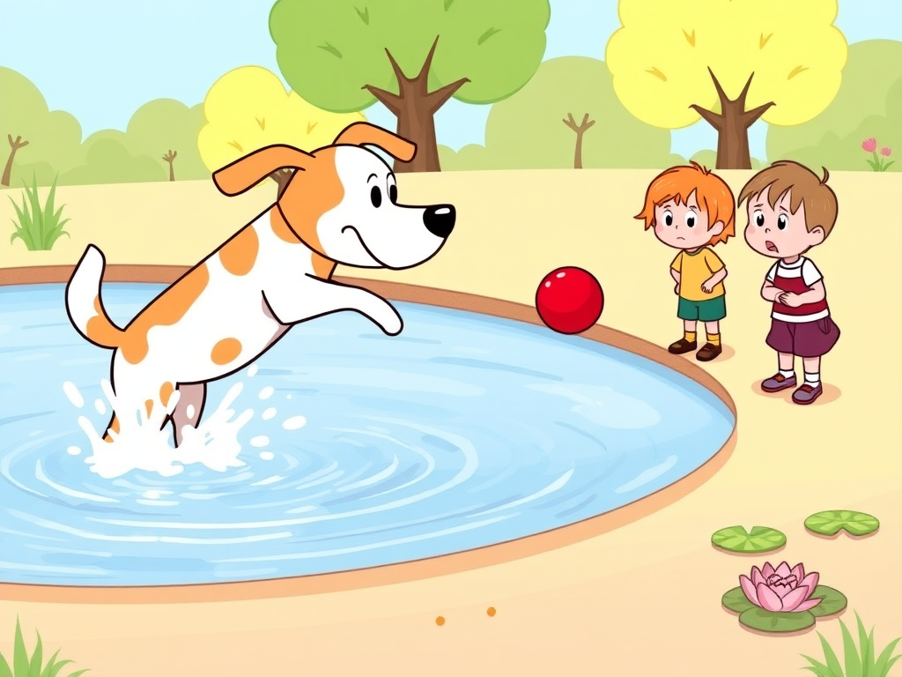
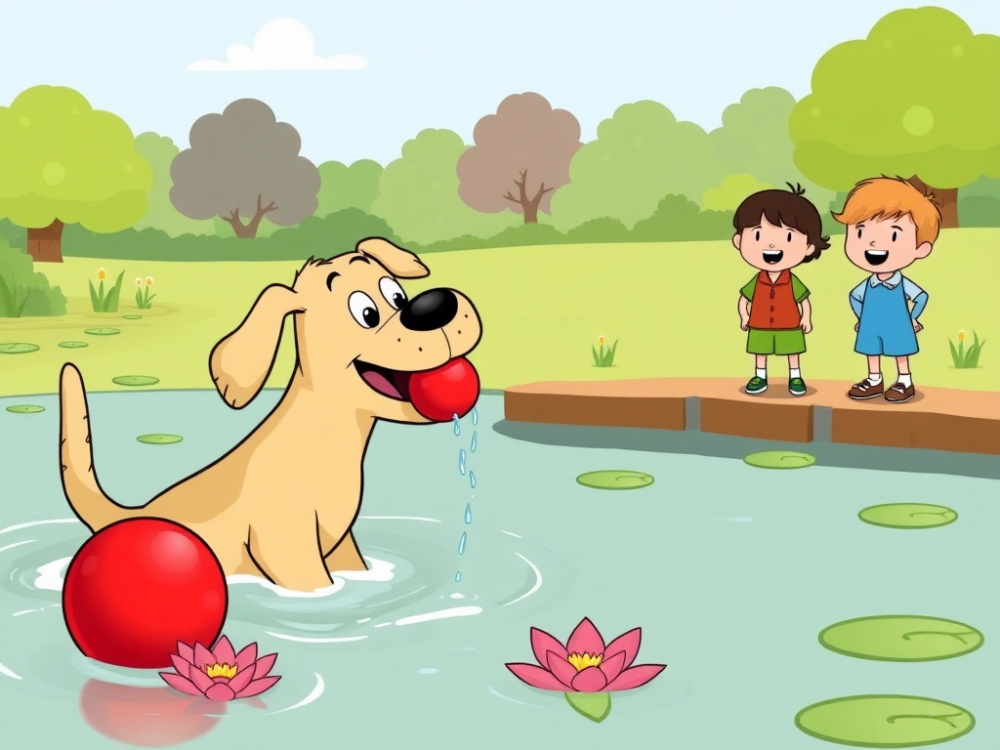

Join Biff, Chip, Kipper, and their dog Floppy on an exciting adventure at the park!
Cover

Biff, Chip, and Kipper were playing with their toys in the garden. They had blocks, cars, and other fun toys.
Page 1

"Let's go to the park," said Mom. "We can take Floppy with us." The children walked to the park with their dog Floppy.
Page 2

"Look!" said Kipper. "I found a ball." The children played catch with the red ball. Floppy watched them play.
Page 3

Oh no! The ball went too far and landed in the pond. "What will we do now?" asked Biff. They all looked at the ball floating on the water.
Page 4

Suddenly, Floppy ran to the pond. Splash! He jumped into the water. "Floppy is going to get the ball!" shouted Chip.
Page 5

Floppy swam to the ball and grabbed it in his mouth. Then he brought it back to the children. "Good dog, Floppy!" they all cheered. What a brave dog!
Page 6